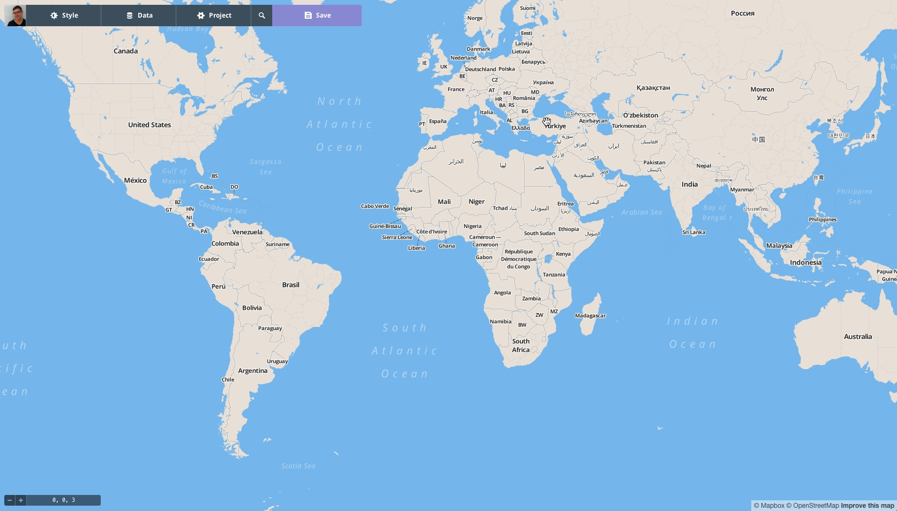
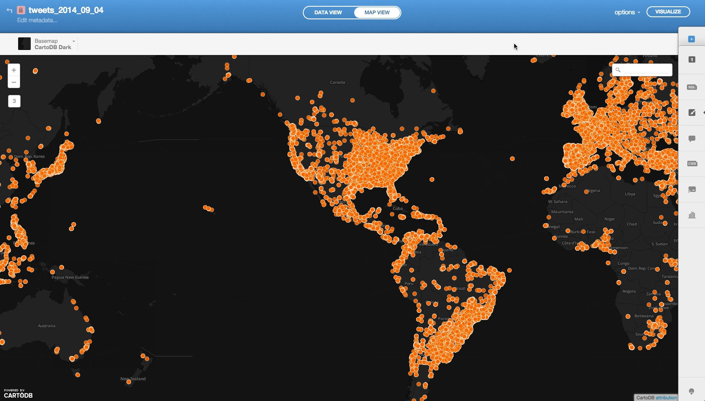
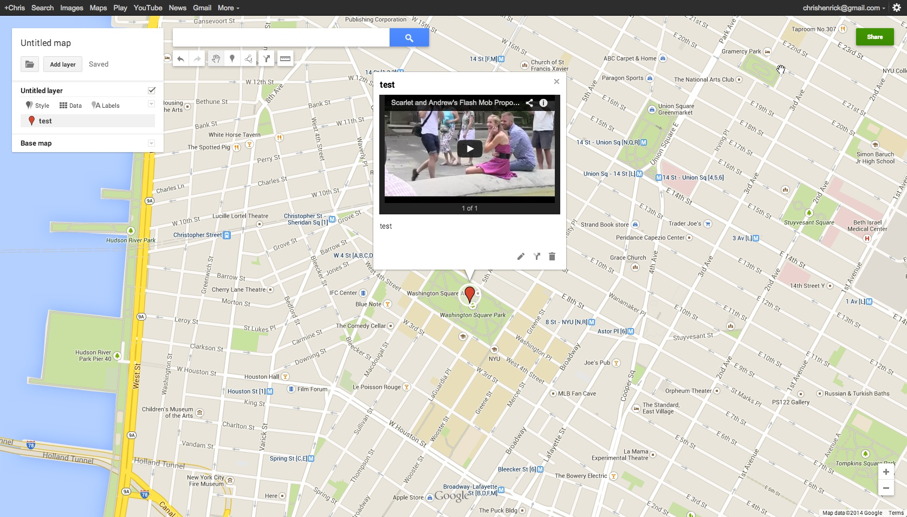
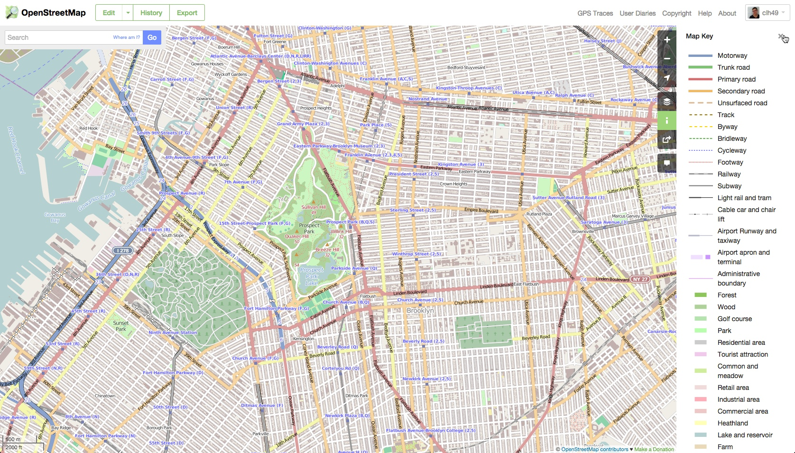
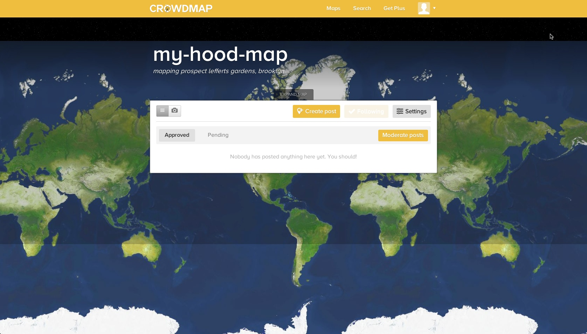
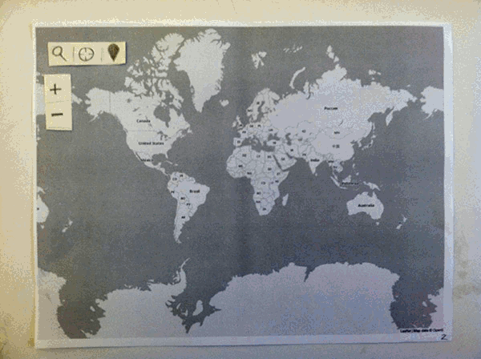

Thesis Studio One Methodological Module
Cartography +
Humanism +
Democracy
Media+Maps
Media+Maps != Easy
Media+Maps != Pretty
UI Precedence





Paper Prototyping
test
To Do
User Persona
Examine Patterns of Georeferencing Media
More Paper Prototyping
User Testing
The End